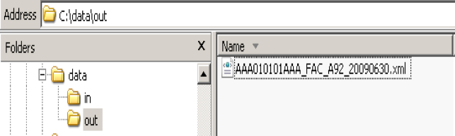
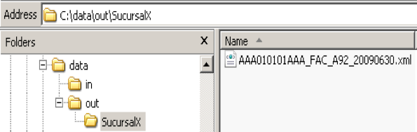
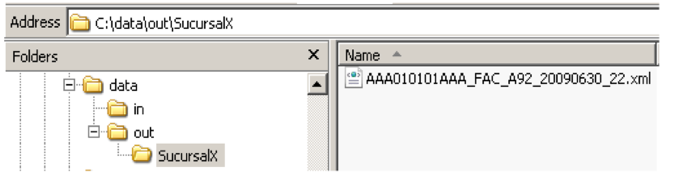
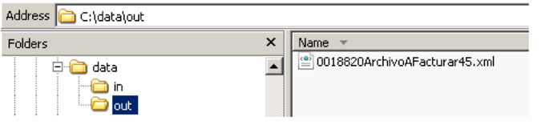
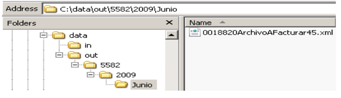

Opciones de configuración.
Conector software permite modificar: - Ubicación de carpetas - Orden de lectura de archivos - Proxy de conexión - Nomenclatura de archivos
Este archivo llamado osgi-framework está localizando en:
...BuzonFiscalConector/BuzonFiscalConector/config/osgi-framework
Cambio de ubicación de repositorios
Se refiere a la ubicación de los cuatro directorios necesarios para el funcionamiento del Conector. Al momento de realizarse la instalación son generados los cuatro directorios predefinidos en el archivo, estos pueden ser cambiados a una ruta distinta pero existente, ya que de no existir esa ruta la aplicación no podrá iniciar.
<property name="com.diverza.bfc.fileDir.default.in">..\data\in</property>
<property name="com.diverza.bfc.fileDir.default.out">..\data\out</property>
<property name="com.diverza.bfc.fileDir.default.processed">..\data\processed</property>
<property name="com.diverza.bfc.fileDir.default.diagnostic">..\data\diagnostic</property>
Orden de lectura de los archivos de entrada
El Conector tiene la capacidad de tomar más de un archivo para ser procesados, la prioridad para leerlos puede ser definida por el usuario en el siguiente parámetro:
<property name="com.diverza.bfc.fileRead.order">ByDate</property>
Los parámetros validos son:
- ByDate: que toma los archivos de acuerdo a su última fecha de modificación, tomando primero el que tenga la fecha más antigua.
- ByName: que ordena de forma ascendente mediante el nombre del archivo.
Proxy
Configuración necesaria para los clientes que no tienen salida directa a internet debido a la configuración en su infraestructura.
Ejemplo
<property name="https.proxyHost">localhost</property>
<property name="https.proxyPort">3128</property>
Nomenclatura
Los archivos que la aplicación nos da de salida (CFDis y PDFs) tienen un nombre especifico y diferente al nombre del archivo de entrada, está formado de las siguientes partes:
RFC_TIPODOCUMENTO_SERIE+FOLIO_FECHA.xml
RFC_TIPODOCUMENTO_SERIE+FOLIO_FECHA.pdf
El archivo de configuración nos permite definir de cuatro diferentes formas la nomenclatura del archivo de salida, así como especificar subdirectorios en los cuales ira contenido cada archivo, se definen a continuación.
Opción 1
Carpetas opcionales + nombre default + RefID
<property name="nombreArchivo">Default</property>
<property name="nombreArchivoParametro">NA</property>
Se escribe el nombre de archivo definido por Diverza RFC_TIPODOCUMENTO_SERIE+FOLIO_FECHA.xml abierto a la posibilidad de incluirse en subcarpetas indicando en el nombre del archivo de entrada con la terminación [C], además la posibilidad de anexar alguna palabra indicándolo con la terminación [NF] al final o [NI] al inicio, cada parámetro va separado por un guion bajo (“_”).
Ejemplo opción 1
Entrada = Archivo22.xml
Salida = ../out/AAA010101AAA_FAC_A92_20090630.xml

Ejemplo opción 1: Subcarpeta
Entrada = SucursalX[C]_Archivo22.xml
Salida = ../out/SucursalX/AAA010101AAA_FAC_A92_20090630.xml

Ejemplo opción 1: Subcarpeta y sufijo
Entrada = SucursalX[C]_Archivo_22[NF].xml
Salida = ../out/SucursalX/AAA010101AAA_FAC_A92_20090630_22.xml

Consideraciones
Los parámetros entre corchetes cuadrados [ ] deberán ir en mayúscula.
Sólo son reconocidas las opciones [C] carpeta, [NI] nombre al inicio y [NF] nombre al final.
Nota
El orden de las carpetas se leen de izquierda a derecha.
Opción 2
Carpetas opcionales + parte nombre default + RefId
<property name="nombreArchivo">Default </property>
<property name="nombreArchivoParametro"> [-RFC][-SF][-TIPODOCTO][-FECHA]</property>
Funciona básicamente igual que la Opción 1, pero en esta opción nos permite eliminar uno o más segmentos del nombre default.
Es importante considerar que puede resultar riesgoso usar el parámetro [-SF] para eliminar la serie mas el folio, ya que es el identificador único que se maneja en el nombre default, se recomienda eliminarlo sólo en caso que el cliente use un RefId único el cual no exponga la perdida de algún archivo por sobre escritura.
Eliminando [-RFC]
Entrada = Archivo22.xml
Salida = ../out/FAC_A92_20090630.xml
Eliminando [-RFC]
Entrada = SucursalX[C]_Archivo22.xml
Salida = ../out/SucursalX/FAC_A92_20090630.xml
Eliminando [-RFC][-FECHA]
Entrada = archivo1.xml
Salida = ../out/SP_PABF41.xml
Consideraciones
- Los parámetros entre corchetes cuadrados
[ ]deberán ir en mayúscula. - Sólo son reconocidas las opciones
[C]carpeta,[NI]nombre al inicio y[NF]nombre al final. - El orden de las carpetas se leen de izquierda a derecha.
- Los parámetros en el archivo de configuración reconocido son
[-RFC]para eliminar el RFC,[-TIPODOCTO]para eliminar el tipo de documento,[-SF]para eliminar la serie y folio,[-FECHA]para eliminar la fecha. - Si requieres eliminar los datos anteriores, y asignar un nombre especifico, se recomienda usar la opción de “NombreEspecial”.
- Si se va a usar el parámetro
[-SF]para eliminar la serie y folio es importante considerar que los archivos podrías sobrescribirse ya que es nuestra referencia para tener un nombre único en un archivo. - Cuando se ingres aun archivo formato txt, y este cuenta con más de una remisión dentro, no se tomara en cuenta la eliminación de la serie y el folio, ya que será necesario escribir más de un archivo de salida.
Opción 3
Nombre salida = Nombre de entrada
<property name="nombreArchivo">NombreEspecial</property>
<property name="nombreArchivoParametro">NA</property>
Se escribe el nombre de archivo definido por el nombre de archivo de entrada con la posibilidad de incluirse en subcarpetas indicando en el nombre de entrada con la terminación [C], y para anexar el nombre se toma el resto del nombre del archivo.
Ejemplo Opción 3: Subcarpetas
Entrada = 5582[C]_2009[C]_Junio[C]_0018820ArchivoAFacturar45.xml
Salida = ../out/5582/2009/Junio/0018820ArchivoAFacturar45.xml

Ejemplo Opción 3: Prefijo
Entrada = 0018820ArchivoAFacturar45.xml
Salida = ../out/0018820ArchivoAFacturar45.xml

Consideraciones
- Los parámetros entre los
[ ]deberán ir en mayúscula. - Solo son reconocidas las opciones
[C]crear carpeta. - Todo el nombre excepto el o los segmentos que contengan
[C], se anexaran para formar parte del nombre. - Es importante considerar que el identificador único deberá ser proporcionado por el cliente de lo contrario existe el riesgo de que se sobrescriba algún archivo.
- En el caso de un archivo TXT con más de una remisión es agregado al final del archivo la serie y el folio de cada Cfd de salida.
Opción 4
Especificación de carpetas y nombre por posición.
<entry key="nombreArchivo">Posicion</entry>
<entry key="nombreArchivoParametro">7[C]_8[C]_10[NF] </entry>
Para esta opción las especificaciones se indican de acuerdo a las longitudes de los datos, respetando igual las opciones de que la [C] hará que se cree una carpeta y la [NF] o [NI] nos indica que será parte del nombre del archivo.
Ejemplo opción 4: Posiciones
Entrada = 0018820ArchivoAFacturar45.xml
Se aplica la lógica que se pasa como parámetro:
Carpeta 1: 0018820
Carpeta 2: ArchivoA Nombre: Facturar45
Salida = ../out/0018820/ArchivoA/Facturar45.xml
Consideraciones
- No reconoce ningún parámetro entre corchetes [ ].
- La longitud del nombre del archivo de entrada deberá ser igual a la suma de
los caracteres que se especifican en el archivo de configuración
7[C]_2[C]_5[NF], por ejemplo en este caso el archivo de entrada deberá tener la longitud de7 + 2 + 5 = 14. - Para el cálculo de la longitud del nombre del archivo de entrada no se considera la extensión del archivo (.XML o .TXT).
- En caso de que no sea igual la longitud del nombre del archivo de entrada a lo especificado en el archivo de configuración se escribirá el archivo de diagnostico con el mismo nombre de entrada conteniendo el siguiente mensaje: "El archivo no tiene la longitud correcta para formar el nombre/directorios de Salida: archivo1.xml".